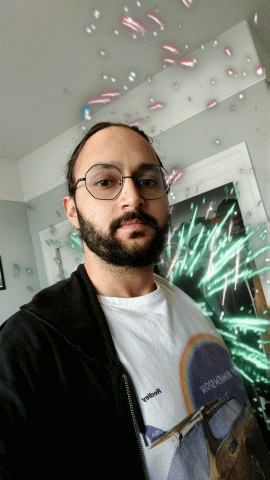
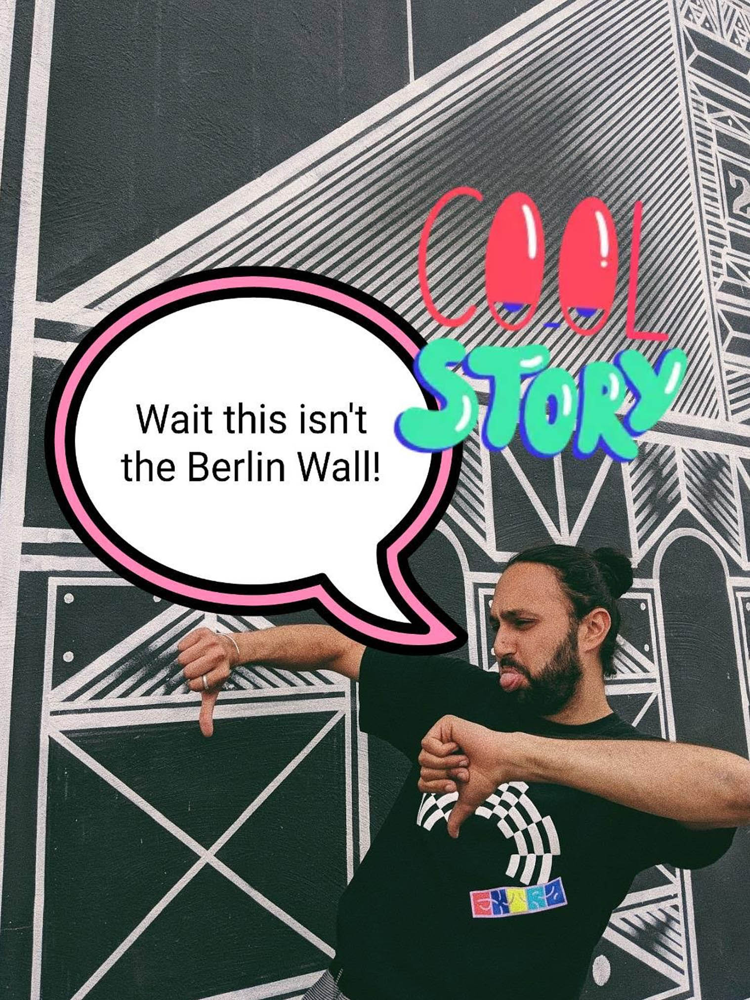
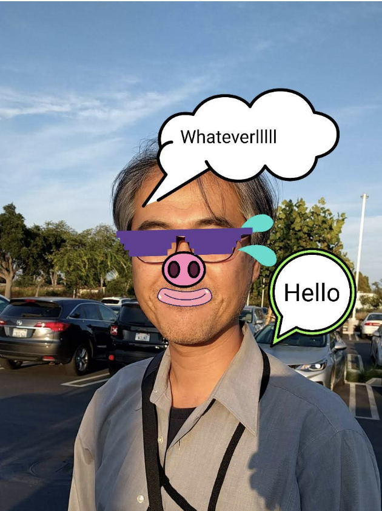
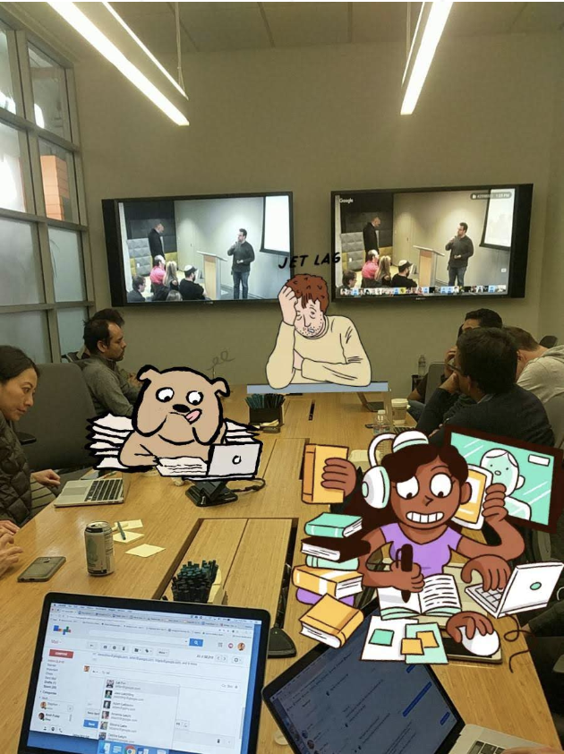

|
←
Go back
|
||||
|
💻
Expressive Camera
product, 2018
|
▶️
|
▶️
|
▶️
|
|
| Expressive Camera was created by Expression, a team of artists and technologists at Google, over two years. I was the lead Product Manager for the project. It is a system of augmented reality and computer vision features, built on top of the camera platform. One set of features (first image) enables users to immerse themselves in 2D and 3D worlds. Each of these worlds is meant to help the user convey a sentiment, so they can clarify their emotions. Another set of features enables users to edit their photos and videos. It understands the content of photos, and automatically suggests imagery to add onto those photos (second image). Additionally it enables users to find and add photos themselves (third image). Expressive Camera is currently available on Google's keyboard, GBoard on Android and iOS. | ||||
| Sentiment based real time overlays | |
|
|
 |
| |
||||
| A large variety of sentiments can be conveyed with real time overlays. Each of these immersive overlays was chosen to help users convey a specific emotion or feeling. Each of them is also bright, colorful and playful to encourage the users to share these images as a way to communicate. Once a user creates their own GIF, conveying a sentiment, it is stored as a GIF that they can reuse in the future. | ||||
| Expressive editing |  | |
||
|  |  | |||
| In addition to real time recording, expressive camera overs a range of editing functionality . A user can edit any photo, and add imagery on top of it to clarify an emotion, or further enhance the ambience of the moment. Expressive Camera can automatically recognize elements in the photo, such as a person, and suggests imagery to collage with - such as a party hat. It also has a large library of stickers and access to image search, so users can find their own imagery. This enables an extremely broad set of image possibilities, in a simple interface. | ||||